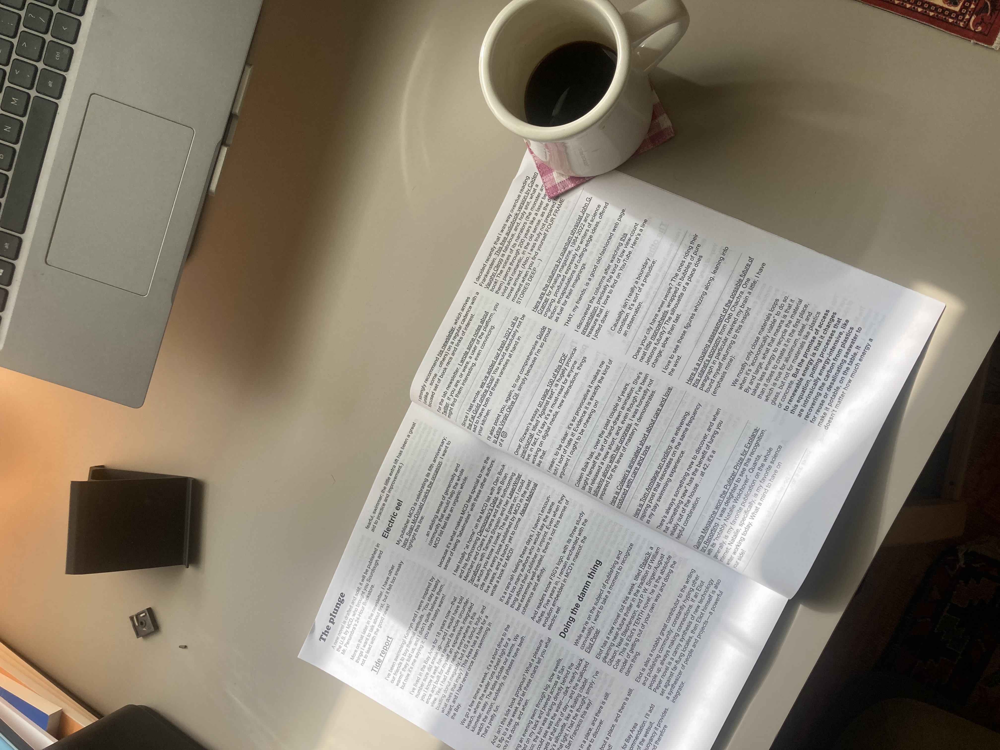
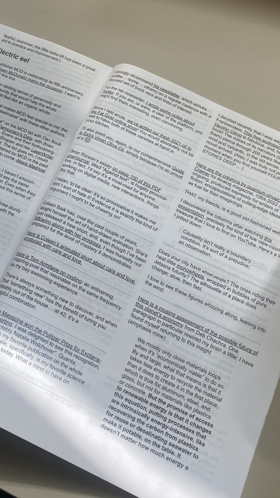

writing
Alone in the digital wilderness
Building a lively neighborhood away from Main Street
published on 10.27.23jake weber
Tessa and I recenetly started watching season one of Alone on the History Channel. As I continue exploring what it looks like to build my own home on the internet (rather than just renting one of the pre-fabs from Instagram, Twitter, etc) I've been wondering about what feels lonely about it. Unfortunately the early Social Media pioneers really struck gold with the "like button", retweet, views, follow, and the timeline. Of course all of these things have massive issues, but their greatest strength is that they ensure that you rarely feel like you are screaming in an empty forest when you participate online. They make you hyper aware that there are other thinking humans around you. Twitter may be a poorly behaved town square, but at least it is a kind of town. Experimenting with sharing more of my own stuff here, off of main street, has brought up the question of whether I like thinking out loud (by writing) or like being heard (by being read). Of course the answer is likely: both. In my post "Conversations with Myself" I said it clearly, "writing is after all, best read". Writing or posting a photo or sharing a project here brings no promise that it will be seen. And perhaps worse than that, leaves the eerie feeling that it was seen by a silent visitor just passing by. I don't track site visitors or leave a place for anyone to "like" anything here. How would I know if someone else was here?
What I really want is to be part of a cool neighborhood. I don't need to be on main street 24/7 (though I will still take trips into town to see what goes on there), but I do want neighbors. I am hopeful that email, comment sections, RSS feeds, and other (more ancient) methods of connection can flourish here. That's why I added the "portals" section of the site. I want to have some roads from me to other people doing cool stuff in their own homes on the web. The goal here is to be independent, self-suficient, personal, and free - but also connected. Crucially, not connected to everyone everywhere all the time, but to the right folks.
I was reading The Plunge from Robin Sloan in my latest Printernet issue and his formatting near the end reminded me of a page in a local newspaper, announcing all the wonderful stuff happening around the town.


I think it would be cool to have a township of likeminded (independent) homeowners of the web to circulate a digital newspaper with. Each week or month or whatever, each resident could add a 1 - 3 sentence blurb about what they are up to for that edition of the paper. I think something like that is but one tiny idea of many that can help get us away from the timeline concept while still keeping a feeling of connection alive. After all, this is the internet. A network ought to be networked.
This is my meandering and existential way of announcing that yesterday I added comments to my posts here. I used the free service HTML Box to get comments added here in about ten minutes. With some light CSS I made their out of the box UI components fit in a bit better and they seem to be working. So if you happen across this, leave a comment and let me know I am not screaming in an empty forest!
In the meantime, I will keep working on making this feel alive and warm like a home ought to and trying to get over the conditioned anticipation of a "like" or follow.
Collected reading on this topic
comments